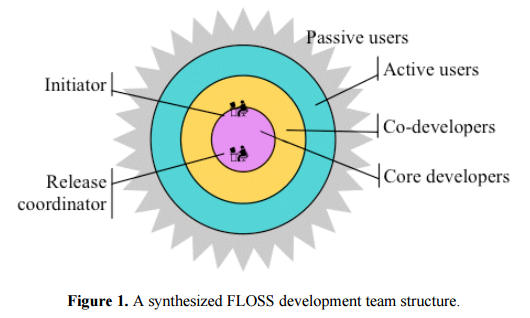

Open Source
Este FAQ pretende responder a questões comuns relacionadas com Open Source, abordando o uso de Open Source Software (OSS) bem como a disponibilização de código.
- O que é Open Source?
- Porquê usar tecnologias Open Source?
- Como é possível ter suporte sem pagar pelo produto?
- Qual é o interesse de as empresas e dos países?
- Porque é que alguém quereria desenvolver para um projeto Open Source sem ter retorno monetário?
- Qual é a estrutura de uma comunidade Open Source? Não há o risco de haverem pessoas mal-intencionadas?
- Mas é código aberto! Como é que pode ser seguro?
- O que dizem as instituições governamentais?
- Software livre pode ser licenciado?
- Exemplos de Projetos Open Source / baseados em Open Source
- Documentação
1. O que é Open Source?
Por software Open Source entende-se todo o programa informático cujo código fonte seja de acesso livre e universal e cuja licença ofereça a todos sem exceção, as seguintes quatro liberdades:
- A liberdade de estudar o funcionamento do programa e de o adaptar a novos problemas;
- A liberdade de distribuir o programa a terceiros;
- A liberdade de utilizar o programa para qualquer fim;
- A liberdade de melhorar o programa e de tornar as modificações públicas, em benefício de toda a comunidade.
2. Porquê usar tecnologias Open Source?
Tendo em vista a necessidade de proteger a informação dos cidadãos, a implementação de tecnologias e sistemas Open Source assegura a transparência e o conhecimento profundo do funcionamento das mesmas. A não dependência de fabricantes externos, par além de promover a integração de empresas e comunidades tecnológicas, fomenta a sinergia organizacional e a partilha de conhecimento. Por poder ser adaptado às necessidades de cada projeto, pode proporcionar uma maior fiabilidade e melhor experiência para os programadores - e em consequência, para os utilizadores.
Da não dependência de fabricantes, resulta uma redução bastante significativa de custos, que podem ser alocados noutras funcionalidades que melhorem o serviço prestado aos mesmos utilizadores.
Paralelamente, verifica-se também uma maior interoperabilidade - uma maior liberdade para integrar com outros sistemas de Gestão Integrada (ERP). No Close Source, por vezes, por se tratarem de produtos de empresas diferentes (muitas vezes, concorrentes), os softwares proprietários costumam ser pouco flexíveis na sua interação e compatibilidade com outras aplicações.
3. Como é possível ter suporte sem pagar pelo produto?
O suporte é fornecido pela comunidade que se cria à volta da tecnologia - há um debate aberto, sugestões de diversas pessoas e um melhor debugging - a probabilidade de encontrar um erro é maior, bem como a probabilidade de encontrar uma solução em menos tempo. Ao existir uma comunidade Open Source, a velocidade com que correções são escritas é bastante superior. Foi o caso de um problema descoberto na implementação TCP/IP de qualquer sistema operacional, em 1996. A correção para Linux foi publicada em 20 minutos, enquanto que para outros sistemas demorou pelo menos 2 dias úteis. Há dezenas de casos semelhantes.
Estas comunidades de programadores geralmente são heterógenas - são programadores que não pertencem necessariamente à mesma organização.
Um bom exemplo é a Linux Foundation, uma organização sem fins lucrativos com reconhecimento mundial com milhares de colaboradores, que trabalham para o desenvolvimento de tecnologias e resolução de problemas de segurança críticos. Esta fundação open-source tem centenas de projetos colaborativos open-souce e é financiada por empresas como Microsoft, Bloomberg, Intel, Huawei, IBM, Cisco, Fuitsu, Oracle, Facebook, Accenture, Tshiba, Vmware, Adobe, Amazon Web Services, Bosch, ebay, Google entre outras.
No entanto, existem muitas outras fundações OpenSource de sucesso (Apache Software Foundation, Eclipse Foundation, Mozilla Foundation ) e outros projetos independentes (Joomla, Wordpress)
4. Qual é o interesse de as empresas em ter serviços com código aberto?
Em prol da transparência, não basta apenas utilizar tecnologias Open Source - mas sim criar código aberto. Numa geração onde se procura a transparência, ter produtos OSS é, cada vez mais, sinónimo de boa publicidade, funcionando como um impulsionador de uma imagem positiva.
Quando um projeto Open Source é atrativo, atrai contribuidores externos - permitindo avançar no projeto de forma mais rápida e com menos custos. Ao ter mais utilizadores, haverão cada vez mais casos de uso a serem explorados, resultando em um código mais robusto. Para além dos contribuidores individuais, poderá também estimular o espirito colaborativo entre empresas - ao facultar código, facilita a aprendizagem entre pares. A titulo de exemplo, podemos referir a Box e o Facebook, duas empresas que trabalharam em conjunto para resolver problemas em uma ferramenta que tinham em comum - HHVM (open-source PHP runtime).
5. Porque é que alguém quereria desenvolver para um projeto open source sem ter retorno monetário?
Nos projetos Open Source, o retorno monetário direto nunca é o objetivo. Quando uma equipa de programadores de uma empresa ou entidade está a desenvolver um projeto recorrendo a diversas tecnologias, por vezes depara-se com problemas que impedem o progresso do projeto. Ao usar tecnologias open source, a equipa não tem que esperar pela reposta da empresa que gere o software - há mais facilidade em reportar o erro e, se possível, contribuir para a resolução do problema.
O desenvolvimento do software/tecnologia Open Source depende de programadores que contribuem por diferentes motivações:
- Porque utilizam o software/tecnologia e sentem necessidade de colaborar com a resolução dos problemas que surgem;
- Liberdade de personalização - permitindo desenvolver novas aplicações que se adequem melhor às necessidades da sua empresa;
- Pelo desafio técnico;
- Pelo reconhecimento;
- Porque trabalham em organizações parceiras do projeto.
6. Mas é código aberto! Como é que pode ser seguro?
Ao adquirir um software / licença fechada, tudo o que o cliente tem são promessas dos fornecedores sobre o nível de segurança que envolve a aplicação. Na verdade, raramente se sabe o que é feito com a informação recebida. Ao ter um software open source, é possível auditar o código e assim, ter uma certeza maior do nível de confiabilidade do produto.
Apesar de existirem diferenças entre software Open Source e Closed Source que afetam a segurança - havendo desvantagens tanto no Open Source como no Closed Source, estes fatores tendem a equilibrar-se, não representando diferenças significativas neste ponto.
Segundo o Communications-Electronics Security Group) do Governo do Reino Unido, Não há diferença estatística significativa nas taxas de vulnerabilidade entre software livre e software proprietário, embora a motivação para investir em segurança seja diferente em cada modelo, assim como as vulnerabilidades. Este afirmação é replicada na OSS Toolkit Security Note publicada pelo Governo Britânico - Open Source, como uma categoria, não é mais ou menos seguro do que o Closed Source.
7. Qual é a estrutura de uma comunidade Open Source? Não há o risco de haverem pessoas mal-intencionadas?
Nos projetos open source não deixa de haver uma hierarquia - existe um sistema de governação. Todas as submissões (pull request) têm que ser revistas e aprovadas. O trabalho de um programador é revisto e auditado por outros.
Um estudo publicado por Kevin Crowston and James Howison ( Hierarchy and centralization in Free and Open Source Software team communications - School of Information Studies Syracuse University) que procurou analisar as interações de correcção de bugs no sistema de bug tracking em mais de 150 projetos Open Source com mais de trinta mil participantes, conclui que
Os projetos são na sua maioria bastante hierárquicos em quatro medidas de hierarquia, consistentes com pesquisas anteriores, mas contrárias à imagem popular desses projetos. Além disso, verificamos que o nível de centralização está negativamente correlacionado com o tamanho do projeto, sugerindo que projetos maiores se tornam mais modulares.
A imagem abaixo, publicada no mesmo artigo, apresenta uma estrutura simplificada tipica de uma comunidade Open Source (onion-like structure). 
8. O que dizem as instituições governamentais?
Em 2014, a Comissão Europeia publicou o "Open source software strategy 2014-2017", que visa reforçar o papel do software de código aberto para muitos dos seus principais serviços e soluções de software TIC. A estratégia renovada coloca uma ênfase especial nos contratos públicos, na contribuição para os projetos de software de código aberto e no fornecimento de software de código aberto na Comissão. Entre as 10 recomendações, destacam-se as seguintes:
- A Comissão deverá continuar a adotar formalmente,(...) o uso de tecnologias e produtos OSS
- OSS tem um importante papel em projetos e-Government e deverá ser considerado no âmbito da framework dessas atividades.
- Para o desenvolvimento interno de novos sistemas de informação, em especial nos casos em que a distribuição está prevista por terceiros fora da infraestrutura da CE, o OSS deve ser a escolha preferida e ser utilizado sempre que possível
Em 2016, a Comissão Europeia tornou público o inventário das soluções open source utilizadas pela Comissão e pelo Parlamento Europeu, sendo esta uma das metas do projeto “EU Free and Open Source Software Auditing” (EU-FOSSA).
A EU-FOSSA pretende oferecer uma abordagem sistemática para que as instituições da UE garantam que o software crítico amplamente utilizado possa ser confiável. O projecto contribuirá para reforçar o contributo das instituições da UE para assegurar e manter a integridade e a segurança dos principais programas informáticos de código aberto. Neste âmbito, anunciou que iria providenciar auditorias de segurança gratuitas para projetos que utilizavam Apache HTTP Server e KeePass (Password manager), dois dos softwares mais utilizados nos projetos da Comissão Europeia e UE.
As páginas comunitárias da EU-FOSSA fornecem informações sobre o estado e os resultados do projeto de auditoria de software livre e Open Source da UE. Entre os documentos publicados no âmbito do EU-FOSSA, procurou-se analisar diversas ferramentas, boas práticas e metodologias de desenvolvimento de software, pretendendo desenvolver guidelines para o uso de OSS e incentivar a sua utilização.
Em Portugal, na Resolução do Conselho de Ministros n.º 12/2012, for aprovado o plano global estratégico de racionalização e redução de custos com as TIC (PGETIC) na Administração Pública, elaborado pelo Grupo de Projeto para as Tecnologias de Informação e Comunicação (GPTIC).
Entre as medidas de estímulo ao crescimento económico encontram -se a adoção de software aberto nos sistemas do Estado, a melhoria dos processos e soluções de compras públicas, a disseminação internacional de metodologias, de soluções TIC e de conhecimento através de clusters de competitividade nacionais e, no âmbito da estratégia de Administração Aberta, a ampla disponibilização de informação do sector público em formatos reutilizáveis, através de projetos como o dados.gov.pt, favorecendo a coprodução de serviços com a sociedade civil, com valor acrescentado para o Estado e para a economia.
Em particular, destaca-se a Medida 21: Adoção de software aberto nos sistemas de informação do Estado, que visa promover a utilização de software aberto nos sistemas de informação da AP sempre que a análise à maturidade e o custo total de posse revelem ser mais favoráveis.
No âmbito desta medida e em linha com a estratégia da Direção -Geral da Informática da Comissão Europeia para a adoção progressiva de soluções open source, devem ser identificadas as ferramentas que devem ser, desde já, utilizadas pela AP com carácter de recomendação ou obrigatoriedade. Este estudo, que não pode ser dissociado do Catálogo de Software do Estado (ver Medida 17), promoverá a utilização de software aberto, produzido pelo Estado, privados ou sociedade civil, de acordo com a licença europeia para software aberto, a EUPL, aprovada pela Comissão Europeia
O PGETIC possui uma plataforma de controlo de indicadores, calculados de acordo com os dados de execução reportados pelos Ministérios e pelas entidades responsáveis pelas Medidas de implementação transversal do PGETIC. Nesta plataforma web, e possível consultar a taxa de execução global e por ministério, a poupança quantitativa efetuada. Até à data, a medida apresenta uma taxa de execução global superior a 50%, .
9. Software livre pode ser licenciado?
Sim, pode ser. Uma licença de software livre, à semelhança do software proprietário, é um documento que determina quais ações o utilizador pode ou não executar em relação a um determinado software.
A diferença é que, em uma licença de software proprietário toda a cópia, redistribuição, ou modificação são estritamente proibidas, podendo ter como sequência processos judiciais. Para contornar as restrições anteriormente referidas, deve-se contactar a entidade que detém os direitos do software, para que este dê permissão para o fazer, ou então adquirir uma licença para cada um dos casos anteriormente descritos.
No caso do software livre, existe uma grande variedade de licenças, que se adaptam a casa projeto, seja gratuito ou comercial. A primeira licença de software livre foi criada por Richard Stallman na Free Software Foundation (FSF), no âmbito do projeto GNU.
A FSF publica diferentes licenças escritas com o propósito de promover e preservar a liberdade do software.
- GNU General Public License (GPL)
- GNU Lesser General Public License (LGPL)
- GNU Affero General Public License (AGPL)
- GNU Free Documentation License (FDL)
No entanto, existem outras licenças Open Source bastante populares.
-
MIT License A licença MIT permite que o software seja tratado sem restrições para o uso, modificação e distribuição. Desta forma, pode ser utilizada tanto em projetos de software livre, quanto em projeto de software proprietário. No texto desta licença não existe copyright, desta forma outros grupos podem modificar a licença, com o objetivo de atender as suas necessidades.
-
Mozilla Public License A Mozilla Public License é uma licença para software livre de código aberto. Esta licença define que o código-fonte copiado ou alterado sob ela deve continuar sob a mesma licença. Entretanto, é permitido que este código seja combinado em um software com arquivos proprietários. Além disso, é possível criar uma versão proprietária de um código sob a licença Mozilla. Esta licença também permite a redistribuição do código produzido, mas obriga a inclusão de citação do autor.
10. Exemplos de Projetos Open Source / baseados em Open Source
Tal como supramencionado, a Linux Foundation é um dos maiores exemplos de comunidades open source. Graças a esta comunidade, desenvolveram-se tecnologias e serviços que agora são utilizados em todo o mundo. Deixaremos dois exemplos:
Node.JS - tecnologia utilizada na SPMS, é um interpretador de código JavaScript server-side e tem uma das maiores comunidades open-source do mundo, com mais de 4 milhões de utilizadores ativos. Em parte, graças à fundação Linux.
Let's Encrypt - um serviço gratuito de certificados de segurança, que procura contribuir para uma internet mais segura e acessível. É aberto e não está sobre o controlo de nenhuma empresa. Cresceu graças ao apoio de dezenas de entidades como a Mozilla, Cisco, Chrome e Facebook
Paralelamente, a Apache Software Foundation também teve bastantes projectos populares. Entre eles: Apache Tomcat - Um dos mais populares open source Java Application Servers.
Apache HTTP Server - servidor HTTP mais utilizado no mundo
OpenOffice.org - conjunto de aplicativos e ferramentas de produtividade
Outros projetos Open Source independentes:
OpenSSL - projeto de Open Source que fornece um conjunto de ferramentas completo para os protocolos TLS (Transport Layer Security) e Secure Sockets Layer (SSL). É também uma biblioteca de criptografia.
WordPress Foundation - plataforma Open Source de blogging e gerenciamento de conteúdo para a web, com milhares de plugins e temas publicados todos os dias
Em Portugal, existem diversos projetos nacionais baseados em open source (entenda-se - que usam tecnologias open source). Alguns destes são divulgados pela ESOP - Associação de Empresas de Software Open Source Portuguesas
- CRM - Gestão de Dados na Saúde - CHMNP Egas Moniz
- Sistema Integrado de Gestão - Conselho Superior da Magistratura
- Fly Tap - Tap Portugal
- Web Portal - Fundação Calouste Gulbenkian
- Lisboa Participa - Camara Municipal de Lisboa
- Plataforma de Gestão de Processos - - A3ES - Agência de Avaliação e Acreditação do Ensino Superior
11. Documentação
- European Commission - Case studies on open source software
- OSS Watch - Is Open Source Software Insecure? An Introduction To The Issues
- Hierarchy and centralization in free and open source software team communications. . Howison J. , Crowston, K.
- ESOP - Associação de Empresas de Software Open Source Portuguesas
- UK Government - OSS Toolkit Security Note
- Open Source Initiative
- Free Software Foudation
- Producing OSS - How to Run a Successful Free Software Project